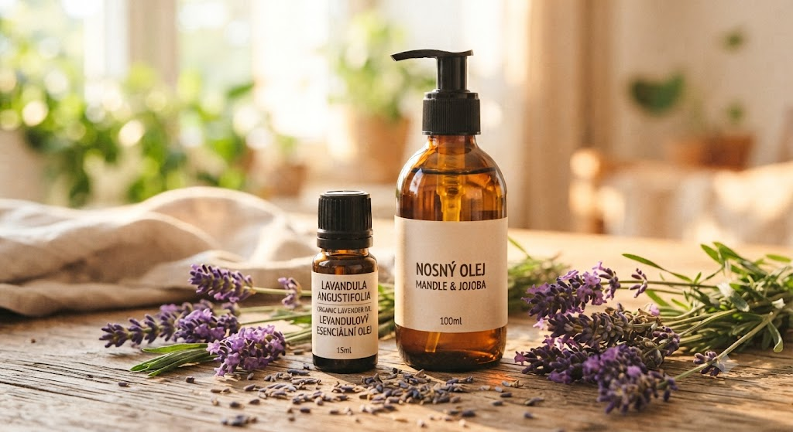

🌿 Lekce 5
na co si dát pozor, než začnete
Každá bytost je jedinečná. I když mají esenciální oleje jasné složení, jejich působení na lidský organismus se může lišit. Ukážu vám, jak otestovat snášenlivost a na co si dát pozor.

Každá bytost je jedinečná. I když mají esenciální oleje jasné složení, jejich působení na lidský organismus se může lišit. Před prvním použitím nového oleje vždy doporučujeme provést test snášenlivosti.
Při zkoušení nového oleje mějte vždy po ruce jakýkoliv rostlinný olej.
Na pokožce: v případě pálení, štípání nebo podráždění potřete postiženou oblast rostlinným olejem.
V očích a na citlivých místech: nikdy nepoužívejte vodu! Esenciální oleje se v ní nerozpouštějí a jejich působení by se jen zhoršilo. Namočte vatový tampon nebo kousek látky do rostlinného oleje a oko opatrně vytírejte/vyplachujte. Pokud podráždění přetrvává, vyhledejte lékaře.
Pro malé děti jsou nevhodné: muškátový oříšek, pelyněk, rozmarýn a máta (máta je vhodná jen ve velmi malém množství). U malých dětí nebo při nejistotě volte raději jemnější variantu v podobě esenciálních vod (hydrolátů) či silnější ředění v nosném oleji.
Při epilepsii: cypřiš, fenykl, jalovec, kafr, muškátový oříšek, pelyněk, rozmarýn, skořice, yzop a zázvor.
V těhotenství: bazalka, jalovec, majoránka, muškátový oříšek, oregano, pelyněk a rozmarýn. (Těhotným ženám doporučujeme použití konzultovat s odborníkem na aromaterapii.)
Při vysokém krevním tlaku: kafr a rozmarýn.
Při akutních ledvinových potížích: jalovec, kmín a santalové dřevo.
Oleje způsobující křeče při předávkování: fenykl a yzop.
Oleje ve vyšších dávkách toxické: pelyněk a vratič.
Oleje náchylné k podráždění pokožky: máta, oregano, pepř, skořice, tymián a vavřín (vždy je nutné provést test snášenlivosti nebo je důkladně zředit v rostlinném oleji).
Nekombinovat s homeopatiky: kafr a máta (nemusí platit vždy).
Skladování: lahvičky s olejem skladujte pevně uzavřené na chladném, tmavém místě a mimo dosah dětí. Zachovají si tak svou sílu a kvalitu po mnoho let.
Aplikace do očí a uší: éterický olej nikdy neaplikujte do očí, jejich blízkého okolí ani přímo do uší. Může dojít k poškození zraku i kontaktních čoček. V případě zasažení ošetřete rostlinným olejem a vyhledejte lékaře.
Pozor na mentol: oleje bohaté na mentol (např. máta) se nesmí používat na oblast krku, tváře ani v jejich blízkosti. U dětí do 24 měsíců věku se nepoužívají vůbec.
Citlivost a alergie: jste-li alergici, proveďte test s malým množstvím oleje (např. na vnitřní straně ramene) 30 minut předem. Pamatujte, že reakce se může u některých lidí objevit až za 2 i více dnů. Začínejte vždy s vysokým ředěním – méně je zde více.
Nejbezpečnější místo: pro aplikaci olejů jsou ideální chodidla a dlaně.
Vnitřní užívání: v mnoha zemích je považováno za bezpečné, v EU se však situace liší. Pokud plánujete konzumovat více než pár kapek zředěného oleje denně, konzultujte to s odborníkem.
Požití dítětem: pokud dítě nechtěně spolkne esenciální olej, podejte mu nápoj s vyšším obsahem tuků (mléko, smetanu či rostlinný olej) a ihned vyhledejte lékařskou pomoc.
Použití do koupele: olej vždy nejdříve smíchejte s nosičem (mléko, smetana, rostlinný olej, sprchový gel, sůl nebo jedlá soda). Čistý koncentrovaný olej by mohl plavat na hladině a podráždit či popálit pokožku, případně poškodit povrch vany.
Jak správně inhalovat: neinhalujte esence přímo z hrdla lahvičky, kde může být olej zoxidovaný a ztratit vůni. Raději kapejte na dlaň, vatový tampon, papírek, látku nebo kousek dřeva.
Před prvním použitím nového oleje vždy proveďte test snášenlivosti.
Při podráždění pokožky nebo očí nikdy nepoužívejte vodu — vždy sáhněte po rostlinném (nosném) oleji.
Některé oleje nejsou vhodné pro děti, těhotné ženy, epileptiky nebo lidi s vysokým tlakem — než je použijete, ověřte si kontraindikace.
Oleje skladujte uzavřené, na chladném a tmavém místě, mimo dosah dětí.
Další lekce: Přímá inhalace — pokračovat →